Explore a evolução dos videogames através de imagens icônicas.
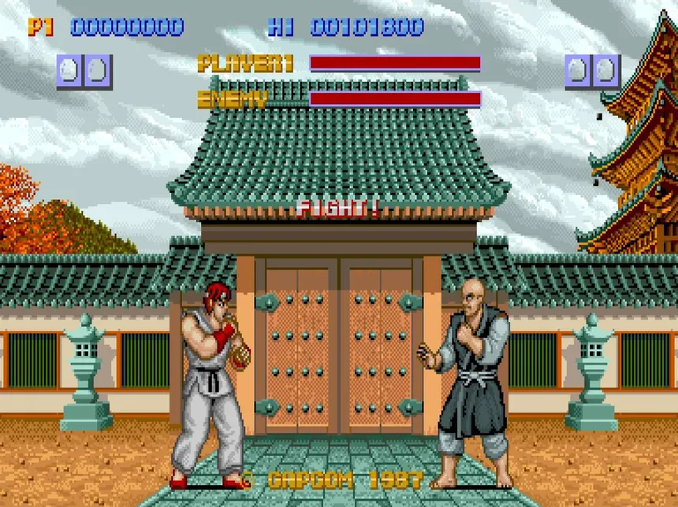
A evolução dos jogos de luta, de 1987 até 2023.
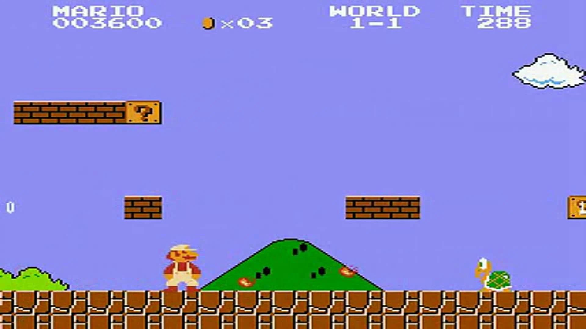
A evolução das aventuras de Mario, de 1985 até 2026.
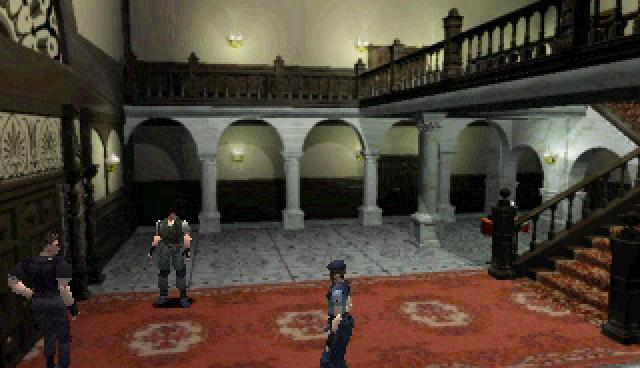
A evolução do terror de sobrevivência, de 1996 até 2026.
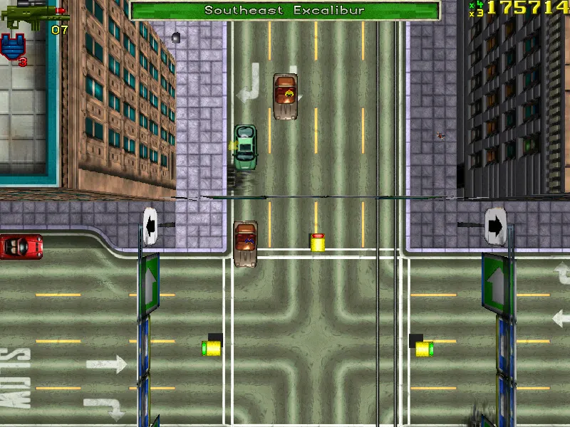
A evolução dos mundos abertos, de 1997 até 2026.
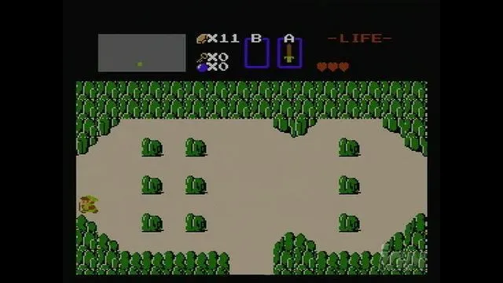
A evolução das aventuras em Hyrule, de 1986 até 2024.
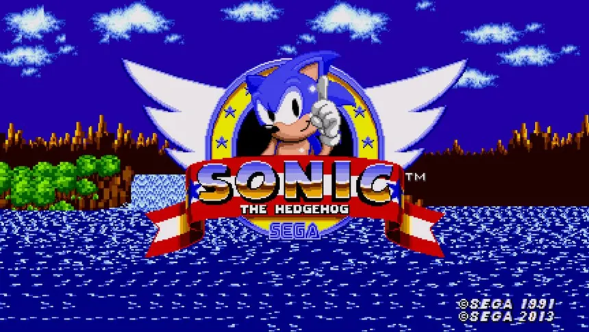
A evolução do ouriço azul, de 1991 até 2024.
Lançado pela Capcom em 1987 para os fliperamas, Street Fighter foi o primeiro jogo de uma das franquias de luta mais importantes da história. Nele, o jogador controlava Ryu, um artista marcial que viajava pelo mundo enfrentando adversários de diferentes nacionalidades. Um segundo jogador também podia participar utilizando Ken. O jogo apresentou elementos que se tornariam marcas registradas da série, como os golpes especiais Hadouken, Shoryuken e Tatsumaki Senpukyaku. Apesar de possuir controles mais rígidos, animações simples e gráficos limitados pela tecnologia da época, Street Fighter estabeleceu as bases do combate individual que seria aperfeiçoado nas continuações. Sua principal contribuição foi introduzir conceitos que ajudaram a definir a identidade da franquia, mesmo que seu sucesso inicial tenha sido muito menor que o de Street Fighter II.
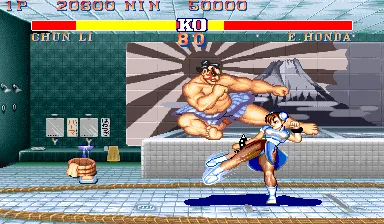
Lançado em 1991, Street Fighter II: The World Warrior revolucionou o gênero de luta e transformou a franquia em um fenômeno mundial. Diferentemente do primeiro jogo, os jogadores podiam escolher entre oito lutadores, cada um com aparência, nacionalidade, estilo de combate e golpes especiais próprios. O título aperfeiçoou os controles, tornou os movimentos mais precisos e popularizou os confrontos competitivos entre dois jogadores. Também apresentou animações mais elaboradas, cenários coloridos e personagens que se tornaram ícones dos videogames, como Chun-Li, Guile, Blanka e Dhalsim. Uma de suas maiores contribuições foi popularizar o sistema de combinações de golpes, conhecido como combos, que passou a ser fundamental nos jogos de luta. Seu enorme sucesso nos fliperamas e nos consoles domésticos influenciou diversas outras franquias e ajudou a estabelecer os jogos de luta como um dos principais gêneros da indústria.
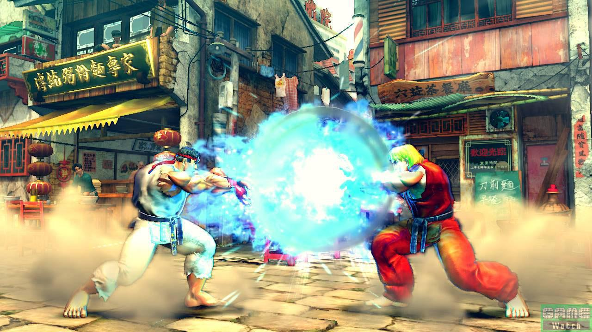
Lançado originalmente nos fliperamas japoneses em 2008, Street Fighter IV marcou o retorno da franquia principal após vários anos sem um novo título numerado. O jogo modernizou a apresentação visual da série, substituindo os tradicionais personagens desenhados em pixels por modelos tridimensionais, mas mantendo os combates em um plano bidimensional. Uma das principais novidades foi o Focus Attack, uma mecânica que permitia absorver determinados ataques e preparar contra-ataques estratégicos. O jogo também introduziu os Ultra Combos, golpes especiais cinematográficos capazes de causar grandes quantidades de dano. Street Fighter IV reuniu personagens clássicos, como Ryu, Ken, Chun-Li e Blanka, e apresentou novos lutadores. Seu sucesso ajudou a recuperar a popularidade dos jogos de luta em uma época em que o gênero havia perdido parte de seu destaque, contribuindo para o crescimento dos campeonatos competitivos e dos jogos de luta modernos.
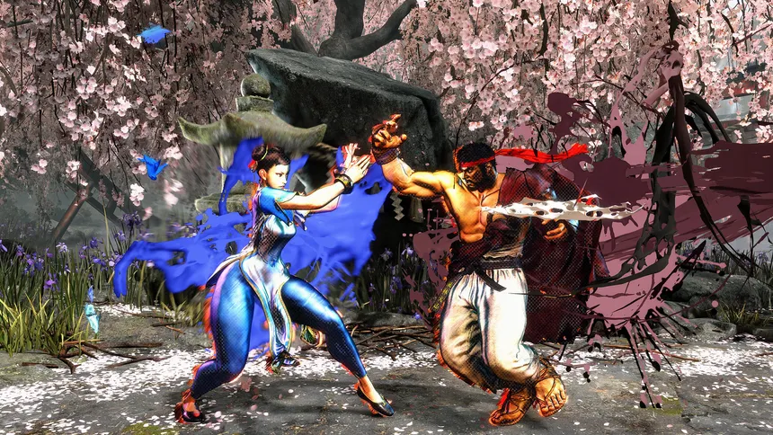
Lançado em 2023, Street Fighter 6 representa uma das maiores evoluções tecnológicas da franquia. Desenvolvido com a RE Engine, o jogo apresenta personagens tridimensionais detalhados, expressões faciais realistas, animações fluidas e efeitos visuais inspirados na arte urbana e no grafite. A principal inovação na jogabilidade é o Drive System, que oferece diferentes possibilidades ofensivas e defensivas, tornando os confrontos mais estratégicos. O jogo também introduziu os controles modernos, que facilitam a execução de golpes especiais e tornam a experiência mais acessível para jogadores iniciantes. Além das lutas tradicionais, Street Fighter 6 apresenta o World Tour, um modo em que o jogador cria seu próprio personagem, explora ambientes tridimensionais e aprende técnicas com lutadores famosos. Já o Battle Hub funciona como um espaço virtual de interação e partidas entre jogadores de diferentes regiões. Com essas novidades, Street Fighter 6 demonstra como a franquia evoluiu de um jogo de fliperama relativamente simples para uma experiência moderna, acessível e competitiva, preservando elementos que marcaram sua história desde 1987.
Lançado pela Nintendo em 1985 para o Nintendo Entertainment System (NES), Super Mario Bros. foi um dos jogos mais importantes da história dos videogames. Nele, o jogador controla Mario, um encanador que atravessa diferentes fases do Reino dos Cogumelos para resgatar a Princesa Peach das mãos de Bowser.
O jogo se destacou pela jogabilidade de plataforma em duas dimensões. Mario podia correr, saltar sobre inimigos, coletar moedas e utilizar poderes especiais, como o Super Cogumelo e a Flor de Fogo.
Seus gráficos em pixels, músicas marcantes e fases de dificuldade progressiva ajudaram a popularizar os jogos de plataforma com rolagem lateral. O título também contribuiu para consolidar o sucesso do NES.
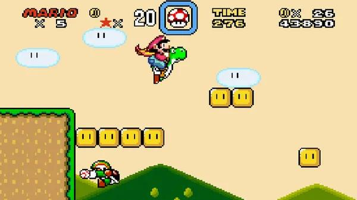
Lançado originalmente em 1990 no Japão para o Super Nintendo (SNES), Super Mario World representou uma grande evolução tecnológica da franquia. O jogo apresentou gráficos mais coloridos, cenários detalhados e animações aprimoradas.
Uma das principais novidades foi Yoshi, o dinossauro que podia ser montado por Mario para atravessar fases, engolir inimigos e alcançar diferentes lugares. A Capa de Pena também permitia planar e voar.
O mapa interativo trouxe caminhos alternativos, fases secretas e novas possibilidades de exploração. Super Mario World demonstrou como os jogos de plataforma em 2D poderiam se tornar mais complexos e visualmente impressionantes.
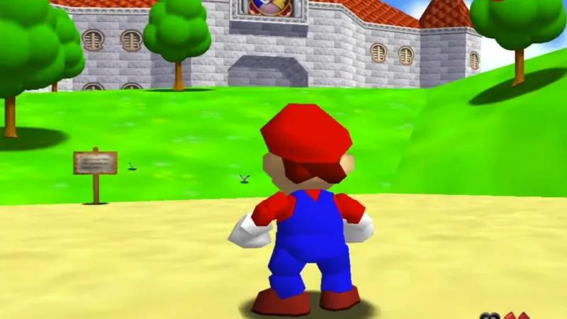
Lançado em 1996 para o Nintendo 64, Super Mario 64 revolucionou os jogos de plataforma ao transportar Mario para ambientes tridimensionais.
Diferentemente dos jogos anteriores, o jogador passou a explorar cenários em 3D com liberdade de movimento. O controle analógico permitia movimentar Mario em várias direções e controlar sua velocidade com precisão.
Mario também ganhou novos movimentos, como o salto triplo, o salto na parede e o salto em distância. A aventura acontecia no castelo da Princesa Peach, onde quadros mágicos levavam a diferentes mundos.
O objetivo era coletar Estrelas de Poder, explorar cenários e descobrir segredos. Super Mario 64 influenciou profundamente o desenvolvimento de jogos tridimensionais, especialmente seus sistemas de câmera e movimentação.
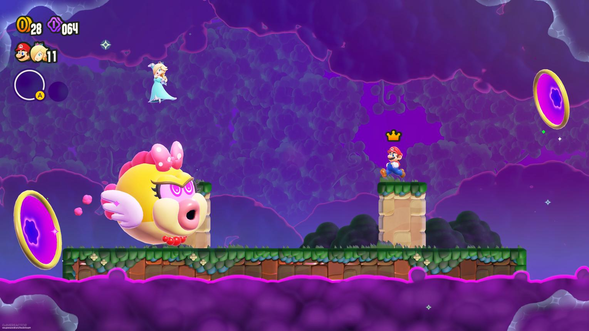
Lançado em março de 2026 para o Nintendo Switch 2, Super Mario Bros. Wonder - Nintendo Switch 2 Edition + Vamos ao Parque Belabel é uma versão aprimorada do jogo original de 2023.
O título mantém a jogabilidade clássica de plataforma em 2D, combinando gráficos modernos, animações expressivas e cenários coloridos com novos recursos e conteúdos.
Entre as novidades estão o Parque Belabel, com desafios e atividades multiplayer, a inclusão de Rosalina como personagem jogável e a possibilidade de controlar uma Luma ajudante.
O jogo também apresenta novos poderes, insígnias duplas e desafios contra os sete Koopalings. Essas novidades ampliam as possibilidades de exploração e combate.
Essa edição demonstra como Super Mario continua evoluindo tecnologicamente sem abandonar sua essência: correr, saltar, explorar cenários e superar obstáculos, como no clássico original de 1985.
Lançado pela Capcom em 1996 para o PlayStation, Resident Evil ajudou a popularizar o gênero survival horror, conhecido como terror de sobrevivência.
A história acompanha membros da equipe S.T.A.R.S. que investigam acontecimentos misteriosos e acabam presos em uma mansão repleta de criaturas perigosas.
O jogador podia escolher entre Chris Redfield e Jill Valentine. A jogabilidade combinava exploração, resolução de enigmas, administração de munição e enfrentamentos contra zumbis.
O jogo utilizava câmeras fixas, cenários pré-renderizados e controles conhecidos como tank controls. Essas características contribuíam para criar tensão, pois o jogador nem sempre conseguia enxergar os perigos.
Resident Evil estabeleceu elementos fundamentais da franquia, como recursos limitados, ambientes misteriosos e a necessidade de sobreviver.
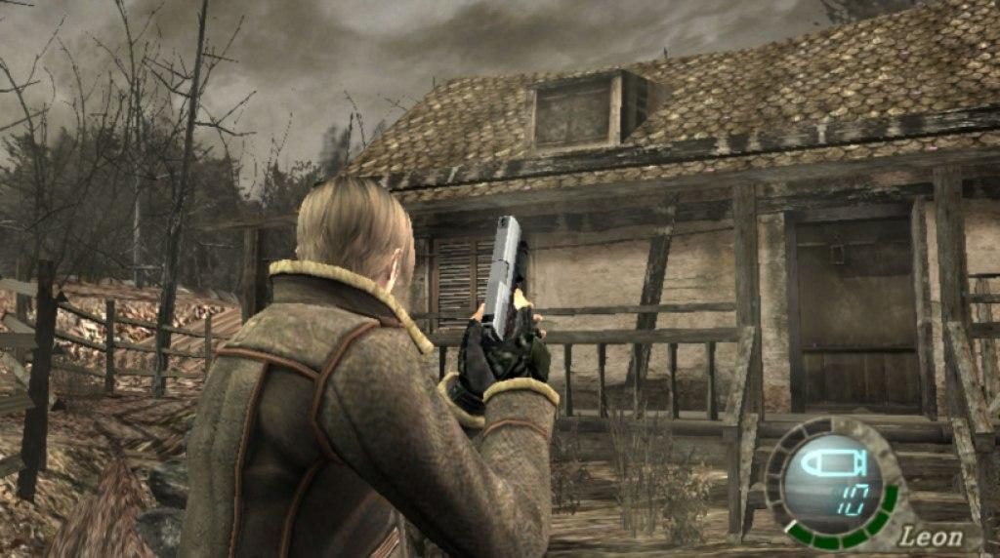
Lançado originalmente em 2005 para o Nintendo GameCube, Resident Evil 4 representou uma das maiores transformações da franquia.
A história acompanha Leon S. Kennedy, enviado a uma região rural da Espanha para resgatar Ashley Graham, filha do presidente dos Estados Unidos.
O jogo substituiu as câmeras fixas por uma câmera posicionada atrás do ombro do protagonista, oferecendo uma visão mais dinâmica dos confrontos.
Também trouxe mira manual, ataques físicos, diferentes armas e um comerciante que permitia comprar equipamentos e aprimorar armamentos.
Resident Evil 4 marcou a transição para uma experiência que combinava terror e ação. Sua câmera sobre o ombro influenciou diversos jogos de ação em terceira pessoa.
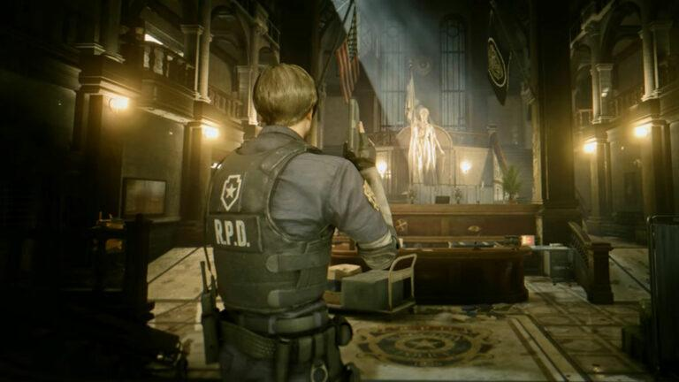
Lançado em 2019, Resident Evil 2 Remake recriou o clássico de 1998 utilizando a RE Engine, com gráficos detalhados, iluminação realista e animações aprimoradas.
A história acompanha Leon S. Kennedy e Claire Redfield durante um surto de infecção que transforma a população de Raccoon City em zumbis.
Diferentemente do original, o remake adotou uma câmera sobre o ombro, mas preservou características do terror clássico, como escassez de munição, enigmas e exploração.
Uma das novidades foi o comportamento de inimigos como Mr. X, que podia perseguir o jogador por diferentes áreas da delegacia.
O jogo demonstrou como um clássico poderia ser modernizado sem perder sua atmosfera de suspense e sobrevivência.
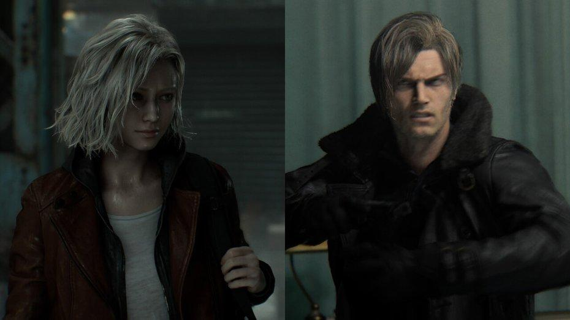
Lançado pela Capcom em 27 de fevereiro de 2026, Resident Evil Requiem é o nono título principal da franquia e marca seus 30 anos de história.
Desenvolvido com a RE Engine, apresenta gráficos fotorrealistas, iluminação avançada, expressões faciais detalhadas e ambientes extremamente imersivos.
A história acompanha dois protagonistas: Grace Ashcroft, uma analista do FBI, e Leon S. Kennedy, um dos personagens mais conhecidos da série.
O jogo combina momentos de terror intenso, investigação, exploração e confrontos repletos de ação.
Uma das principais novidades é a possibilidade de alternar entre as perspectivas em primeira e terceira pessoa, permitindo diferentes formas de experimentar o medo.
Requiem demonstra a evolução da franquia desde os cenários pré-renderizados de 1996 até os ambientes tridimensionais modernos de 2026, preservando sua essência de sobrevivência.
Lançado em 1997, o primeiro Grand Theft Auto apresentou uma proposta diferente dos jogos de ação tradicionais: permitir que o jogador explorasse livremente uma cidade e realizasse missões criminosas.
Desenvolvido pela DMA Design, estúdio que posteriormente se tornaria a Rockstar North, o jogo utilizava gráficos bidimensionais e uma câmera posicionada acima dos personagens e veículos.
O jogador podia roubar carros, dirigir pelas ruas, fugir da polícia e cumprir missões para organizações criminosas. As cidades eram inspiradas em locais americanos, incluindo Liberty City, Vice City e San Andreas.
Apesar das limitações gráficas da época, o título se destacou pela liberdade de exploração e pela possibilidade de escolher diferentes caminhos durante as partidas.
Esse conceito de mundo aberto se tornaria a principal característica da franquia e influenciaria profundamente sua evolução nos anos seguintes.
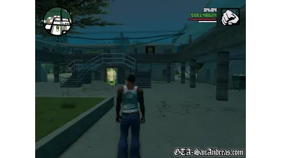
Lançado em 2004 para o PlayStation 2, GTA: San Andreas representou uma enorme expansão dos mundos abertos apresentados nos jogos anteriores da série.
A história acompanha Carl Johnson, conhecido como CJ, que retorna à cidade de Los Santos após a morte de sua mãe e acaba envolvido em conflitos entre gangues, corrupção policial e organizações criminosas.
O jogo apresentou um estado fictício com três grandes cidades: Los Santos, San Fierro e Las Venturas, além de regiões rurais, desertos e pequenas cidades.
Uma das principais novidades foi a personalização do protagonista. CJ podia modificar sua aparência, comprar roupas, frequentar academias, aprender estilos de luta e desenvolver habilidades físicas.
Também foram introduzidas diversas atividades opcionais, veículos variados e novas possibilidades de exploração. San Andreas demonstrou como um mundo aberto poderia oferecer uma experiência muito mais ampla e dinâmica.
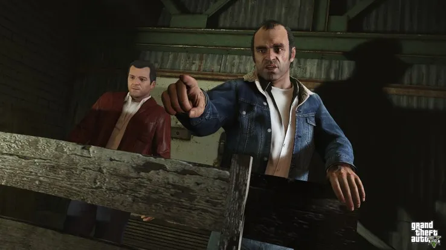
Lançado originalmente em 2013 para PlayStation 3 e Xbox 360, Grand Theft Auto V elevou o nível de detalhamento dos mundos abertos da franquia, apresentando uma versão moderna de Los Santos e da região de Blaine County.
Pela primeira vez na série principal, o jogador podia alternar entre três protagonistas: Michael De Santa, Franklin Clinton e Trevor Philips, cada um com personalidade, habilidades e histórias diferentes.
O jogo apresentou melhorias significativas nos gráficos, na física dos veículos, nas animações e no comportamento dos personagens que habitavam a cidade.
O mundo aberto oferecia inúmeras atividades, incluindo corridas, esportes, exploração submarina, compra de propriedades e grandes assaltos planejados.
Além da campanha principal, GTA Online expandiu a experiência com um ambiente multiplayer persistente, permitindo que jogadores participassem de missões, corridas e atividades juntos.
GTA V se tornou um dos jogos mais influentes e comercialmente bem-sucedidos da história dos videogames.
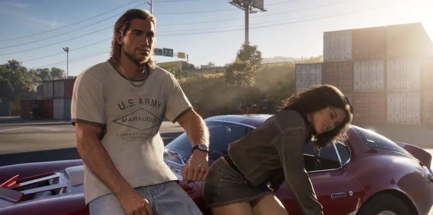
Com lançamento previsto para 19 de novembro de 2026, Grand Theft Auto VI representa a próxima grande evolução da franquia desenvolvida pela Rockstar Games.
O jogo será ambientado no estado fictício de Leonida, inspirado na Flórida, incluindo o retorno à famosa Vice City em uma versão contemporânea.
A história acompanhará Jason Duval e Lucia Caminos, dois protagonistas envolvidos no mundo do crime que precisam confiar um no outro após um assalto malsucedido.
Os materiais oficiais apresentados pela Rockstar destacam ambientes urbanos detalhados, paisagens naturais, personagens expressivos e uma grande variedade de locais.
GTA VI promete expandir a imersão e a complexidade dos mundos abertos, aproveitando os recursos da atual geração de consoles. Entretanto, suas características completas de jogabilidade ainda dependem do lançamento.
Comparado ao primeiro GTA de 1997, com gráficos 2D e câmera vista de cima, o novo título representa quase três décadas de evolução tecnológica, narrativa e visual.
Lançado originalmente em 1986 no Japão para o Famicom Disk System, The Legend of Zelda foi criado pela Nintendo e apresentou uma proposta inovadora de aventura e exploração.
O jogador controla Link, um jovem herói que precisa explorar o reino de Hyrule, encontrar fragmentos da Triforça da Sabedoria e derrotar o vilão Ganon para salvar a Princesa Zelda.
Diferentemente de muitos jogos da época, Zelda oferecia grande liberdade para explorar o mapa, descobrir cavernas, enfrentar monstros e encontrar equipamentos.
Seus gráficos eram bidimensionais, com uma câmera vista de cima. Apesar da simplicidade visual, o jogo apresentava masmorras, enigmas e segredos que incentivavam a exploração.
O primeiro Zelda estabeleceu características fundamentais da franquia, como a aventura em Hyrule, os quebra-cabeças, a descoberta de itens e a liberdade de exploração.
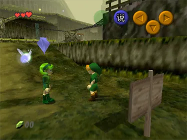
Lançado em 1998 para o Nintendo 64, The Legend of Zelda: Ocarina of Time marcou a transição da franquia para ambientes totalmente tridimensionais.
A história acompanha Link em uma jornada para impedir que Ganondorf conquiste Hyrule. Durante a aventura, o protagonista viaja entre diferentes períodos de sua vida, assumindo as formas de criança e adulto.
O jogo introduziu sistemas que revolucionaram as aventuras em 3D, incluindo a mira Z-Targeting, que permitia travar a câmera em inimigos e facilitar os combates.
Os ambientes tridimensionais permitiram explorar florestas, montanhas, templos e cidades com uma profundidade visual impossível nos jogos anteriores.
Ocarina of Time se tornou uma referência na indústria, influenciando sistemas de câmera, combate e exploração utilizados em diversos jogos posteriores.
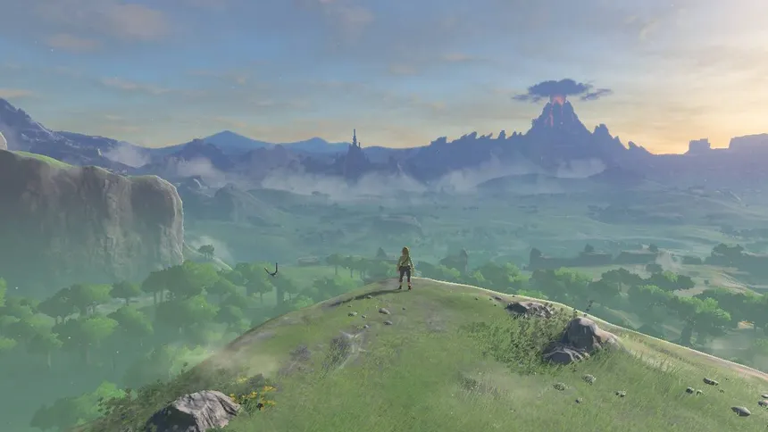
Lançado em 2017 para o Nintendo Switch e Wii U, The Legend of Zelda: Breath of the Wild transformou novamente a estrutura da franquia.
O jogador controla Link, que desperta após um sono de cem anos e precisa explorar uma Hyrule devastada para enfrentar Calamity Ganon.
Uma das maiores inovações foi a liberdade de exploração. O jogador podia escalar montanhas, planar, cozinhar, enfrentar inimigos e descobrir segredos em praticamente qualquer ordem desejada.
O jogo também apresentou sistemas físicos e ambientais complexos, permitindo interações criativas com objetos, clima, fogo, eletricidade e outros elementos do cenário.
Seu estilo visual combinava gráficos tridimensionais modernos com uma direção artística inspirada em animações. Breath of the Wild influenciou profundamente o desenvolvimento de jogos de mundo aberto.
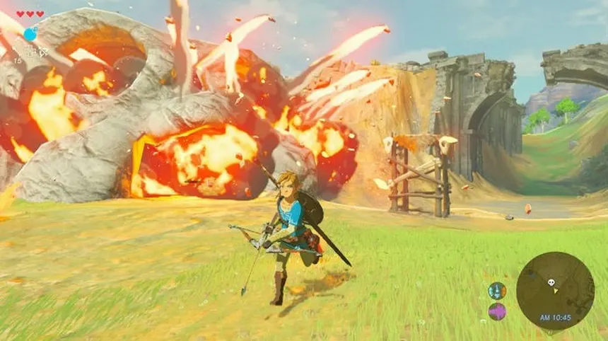
Lançado em setembro de 2024 para o Nintendo Switch, The Legend of Zelda: Echoes of Wisdom apresentou uma mudança importante na franquia ao colocar a Princesa Zelda como protagonista da aventura.
A história acontece em Hyrule, onde misteriosas fendas começam a fazer pessoas e regiões desaparecerem. Com Link entre os desaparecidos, Zelda precisa assumir a responsabilidade de salvar o reino.
A principal novidade é o poder de criar cópias de objetos e criaturas, chamadas de ecos. Essa mecânica permite resolver enigmas, enfrentar inimigos e explorar cenários de diferentes maneiras.
Visualmente, o jogo utiliza gráficos tridimensionais estilizados, com personagens de aparência semelhante a pequenos brinquedos, mantendo uma perspectiva de câmera vista de cima.
Echoes of Wisdom demonstra que a evolução dos videogames não depende apenas de gráficos mais realistas, mas também de novas mecânicas, liberdade criativa e diferentes formas de contar histórias.
Lançado pela Sega em 1991 para o Mega Drive, Sonic the Hedgehog apresentou um novo personagem que rapidamente se tornaria um dos maiores ícones da história dos videogames.
Criado para representar a identidade da Sega, Sonic se destacou por sua velocidade, personalidade irreverente e visual marcante. Seu principal inimigo era o cientista Dr. Eggman, também conhecido como Dr. Robotnik.
O jogo utilizava gráficos bidimensionais com rolagem lateral. Diferentemente de muitos jogos de plataforma da época, sua jogabilidade incentivava movimentos rápidos, saltos precisos e o aproveitamento da velocidade para atravessar obstáculos.
As fases apresentavam caminhos alternativos, rampas, molas, anéis colecionáveis e cenários coloridos, como a famosa Green Hill Zone.
Sonic the Hedgehog ajudou a consolidar o Mega Drive e estabeleceu as principais características da franquia: velocidade, exploração, reflexos e fases dinâmicas.
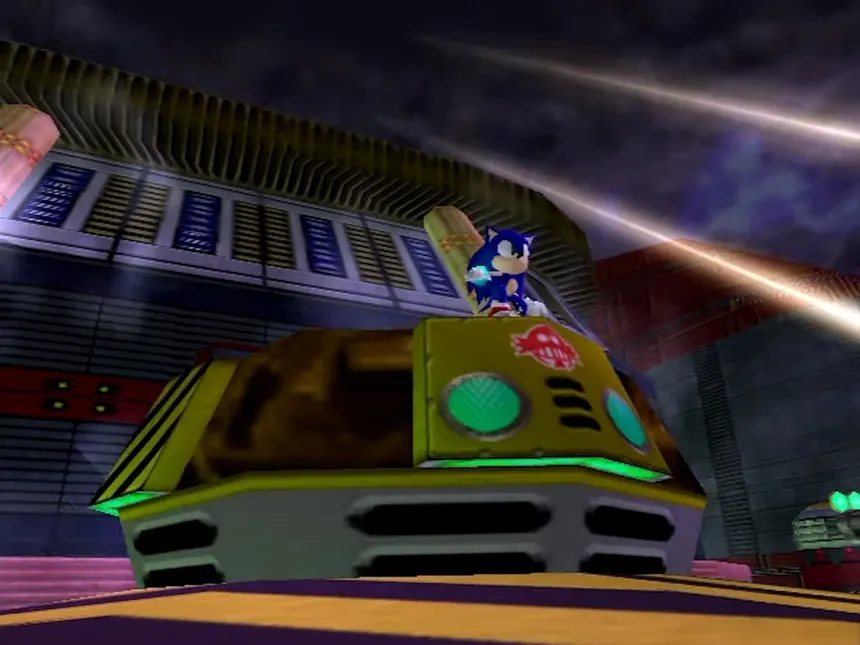
Lançado originalmente em 1998 no Japão para o Sega Dreamcast, Sonic Adventure marcou uma das maiores mudanças da franquia ao transportar a experiência de Sonic para ambientes totalmente tridimensionais.
O jogo apresentou modelos de personagens em 3D, cenários mais detalhados, animações aprimoradas e uma narrativa mais desenvolvida, envolvendo a ameaça da criatura Chaos.
Uma das grandes novidades foi a possibilidade de controlar diferentes personagens, incluindo Sonic, Tails, Knuckles, Amy Rose, Big e E-102 Gamma. Cada um possuía habilidades e estilos de jogabilidade próprios.
A transição para o 3D permitiu criar fases com curvas, descidas, plataformas e percursos mais complexos. O jogador também podia explorar áreas de aventura, conversar com personagens e descobrir segredos.
Sonic Adventure demonstrou como a velocidade característica da série poderia ser adaptada aos ambientes tridimensionais, estabelecendo as bases para muitos jogos posteriores.
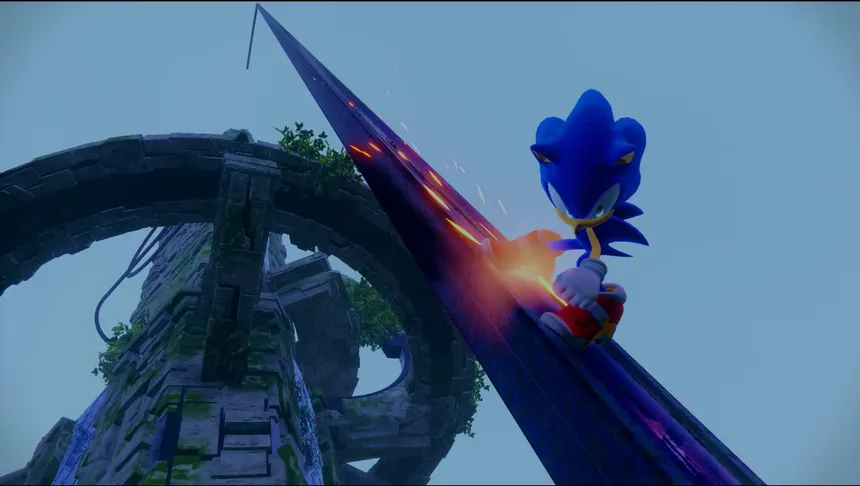
Lançado pela Sega em 2022, Sonic Frontiers representou uma nova transformação na franquia ao introduzir o conceito de zonas abertas, chamado pela desenvolvedora de Open Zone.
A história acompanha Sonic durante sua exploração das misteriosas Starfall Islands, onde precisa enfrentar criaturas desconhecidas e descobrir os segredos de uma civilização antiga.
Diferentemente dos jogos tradicionais, que normalmente apresentavam fases com percursos definidos, Frontiers permitiu explorar grandes áreas tridimensionais com maior liberdade.
O jogador podia correr por extensos cenários, enfrentar inimigos, resolver desafios, coletar itens e descobrir plataformas espalhadas pelo ambiente.
O título também introduziu novas mecânicas de combate, uma árvore de habilidades e o movimento Cyloop, que permitia desenhar trajetórias ao redor dos inimigos e objetos.
Sonic Frontiers demonstrou uma tentativa de modernizar a franquia, combinando a velocidade clássica do personagem com exploração livre e sistemas de ação mais complexos.
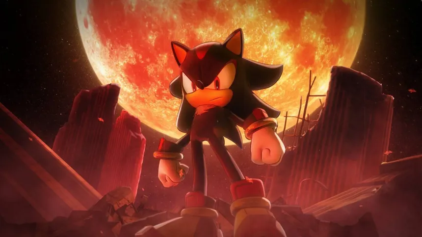
Lançado pela Sega em outubro de 2024, Sonic X Shadow Generations reúne uma versão remasterizada de Sonic Generations, originalmente lançado em 2011, com uma nova campanha protagonizada por Shadow the Hedgehog.
A parte dedicada a Sonic permite controlar suas versões clássica e moderna, combinando fases de plataforma bidimensionais com percursos tridimensionais em alta velocidade.
Essa combinação demonstra como a franquia evoluiu ao longo das décadas, preservando elementos tradicionais dos jogos de 1991 e incorporando tecnologias modernas.
Já a campanha Shadow Generations apresenta uma nova aventura focada em Shadow, que enfrenta ameaças relacionadas ao seu passado e desenvolve habilidades especiais conhecidas como Doom Powers.
O jogo apresenta gráficos tridimensionais modernos, animações aprimoradas, cenários detalhados e transições entre diferentes estilos de jogabilidade.
Sonic X Shadow Generations representa uma celebração da história da franquia, mostrando como Sonic passou dos gráficos em pixels do Mega Drive para experiências modernas que combinam velocidade, exploração e ação.